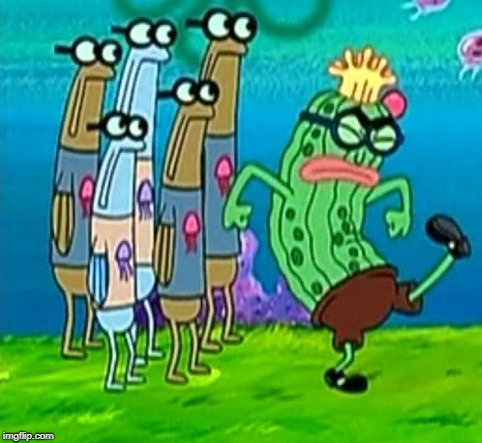

„Sobald das Team wächst und sich weiterentwickelt, ist es wichtig, auf die Kultur genauso zu achten wie auf andere wichtige Elemente der Infrastruktur, von denen Sie abhängen.“
Eine Kultur begründen
Die Kultur in einem Unternehmen wird häufig unterschätzt, doch gerade für die Rolle des Senior Engineering Leaders ist das entwickeln bzw. weiterentwickeln einer Kultur von hohem Wert. Die Kultur hat gerade in wachsenden Teams oder Unternehmen eine ebenso hohe Relevanz wie andere Infrastruktur-Maßnahmen.
Im ersten Moment klingen grundlegende Ideen wie „Struktur und Prozesse“ gerade für kleinere Startups abschreckend. Die kleinen und losen Projektteams reagieren häufig gelangweilt auf solche eher stellvertretend für große unbewegliche, langsame und innovationshemmende Unternehmen stehende Attribute.
In solchen Fällen sind Skeptiker des Kulturbegriffs eher mit Begrifflichkeiten wie „Lernen und Transparenz“ zu ködern. Denn das Lernen aus Erfolgen und Misserfolgen innerhalb der Organisation weiter zu geben und so mit der Zeit stabiler zu skalieren ist in jeder Hinsicht wünschenswert.
Hierbei ist wissenschaftliches Arbeiten besonders effektiv. Gemeint ist besonders das Testen von eigenen Theorien zum Thema Teamkultur. Dafür muss es eine Hypothese geben, welche es im Unternehmensalltag zu integrieren gilt. Dann folgt die Überprüfung, um ggf. mit der Hypothese zu scheitern.
Ein auftretendes Problem kann so iterativ gelöst werden. Die erste Lösung konnte sich nicht durchsetzen, oder stieß nicht auf Akzeptanz unter den Mitarbeitern. Dann bedarf es einer anderen Lösung. Dieses Scheitern ist erforderlich.
Ein Beispiel dafür wäre der Unternehmensweite Verzicht auf Titel. Dadurch wird die Unternehmenshierarchie sehr flach und Kollegen agieren auf Augenhöhe. Das suggeriert immerhin die Hypothese. Das Gegenteil ist häufig der Fall, denn wie Freeman1 bereits nachweisen konnte, ist der Verzicht von Strukturen in einer wachsenden Gruppe meist von verborgenen Strukturen begleitet.
Grund dafür ist laut Freeman die menschliche Kommunikation und dem, in diesem Fall gescheiterten, Versuch diese mit der Größe der Organisation zu skalieren. Freeman beschreibt einige Umstände unter denen unstrukturierte Gruppen funktionieren können:
-
Die Gruppe ist aufgabenorientiert, also in der Menge ihrer Tätigkeiten begrenzt. Das ist dann gegeben, wenn die Gruppe ein gemeinsames, klar definiertes und zeitlich terminiertes Ziel verfolgt, für dessen Erreichung eine eingeschränkte Menge an Tätigkeiten zur Verfügung stehen. Wie z.B. das herausbringen einer Zeitung.

-
Sie ist klein und homogen. Es entstehen Zielkonflikte und Informationsungleichgewichte, wenn die Gruppe zu groß und divers ist, diese Gruppen bergen dadurch ein höheres Konfliktpotential.
-
Es wird viel kommuniziert. Wenn die Gruppengröße steigt, dann steigt der Abstimmungsaufwand quadratisch. Informationen müssen aber verteilt werden, um besonders in wichtigen Phase alle in Entscheidungen mit einbeziehen zu können.

-
Der Spezialisierungsgrad ist gering. Es ist also niemand unverzichtbar für die Gruppe. In einer Gruppe aus Entwicklern würde das bedeuten, dass es ausschließlich Full-Stack-Entwickler gibt.

1 „The tyranny of structurelessness“ – Jo Freeman veröffentlicht im Jahre 1970